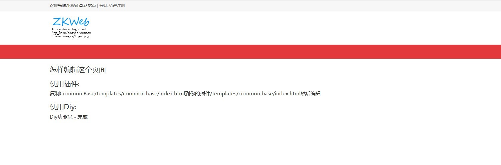
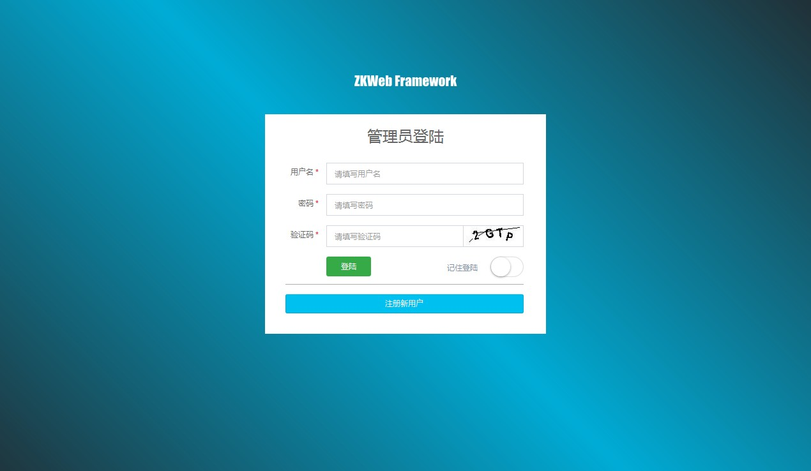

首次运行
ZKWeb运行时需要核心项目和插件。
核心项目是ZKWeb，
插件项目是ZKWeb.Plugins，后面会说明如何添加新的插件项目。
核心项目只用于运行插件，如果客户需要不同的功能应该通过编写插件支持。
下载项目
通过git下载项目 请把ZKWeb和ZKWeb.Plugins下载到同一个文件夹中
git clone https://github.com/zkweb-framework/ZKWeb.git git clone https://github.com/zkweb-framework/ZKWeb.Plugins.git
创建数据库
ZKWeb目前支持的数据库服务器有PostgreSQL, SQLite, MSSQL, MySQL，运行前创建空数据库即可。
修改配置文件
打开ZKWeb\ZKWeb\App_Data\config.json，修改其中的Database和ConnectionString
使用PostgreSQL数据库时可以按以下的格式配置
"Database": "postgresql", "ConnectionString": "Server=127.0.0.1;Port=5432;Database=test_db;User Id=test_user;Password=123456;",
使用SQLite数据库时可以按以下的格式配置
"Database": "sqlite", "ConnectionString": "Data Source={{App_Data}}\\test.db;Version=3;New=True;",
使用MSSQL数据库时可以按以下的格式配置
"Database": "mssql", "ConnectionString": "Server=127.0.0.1;Database=test_db;User Id=test_user;Password=123456;",
使用MySQL数据库时可以按以下的格式配置
"Database": "mysql", "ConnectionString": "Server=127.0.0.1;Port=3306;Database=zkweb;User Id=root;Password=123456;",
运行网站
使用Visual Studio 2015以上的版本打开ZKWeb项目，然后运行就可以看到默认的首页。
首次运行需要编译所有插件，可能需要几分钟，请耐心等待完毕。

登陆后台
后台地址是/admin，首次运行网站时应该先注册一个用户并用此用户登录到后台。
网站创建后第一个登陆到后台的用户会成为超级管理员。

重新初始化数据库
步骤:
- 清空数据库
- 删除App_Data\DatabaseScript.txt
- 刷新网站
部署到服务器
步骤:
- 复制App_Data, bin, Global.asax, Web.config到目标目录
- 复制所有插件到App_Data\Plugins（复制到其他目录时相应修改下面的配置）
- 修改App_Data\config.json中的
PluginDirectories，值[ "App_Data/Plugins" ] - 如果不需要服务器上修改代码，可以删除插件下的所有src文件夹（可使用批处理或工具删除）
最终的目录结构应该如下
- App_Data
- Plugins
- config.json
- bin
- Global.asax
- Web.config
IIS配置和普通的asp.net网站一样，不需要特别的设置。